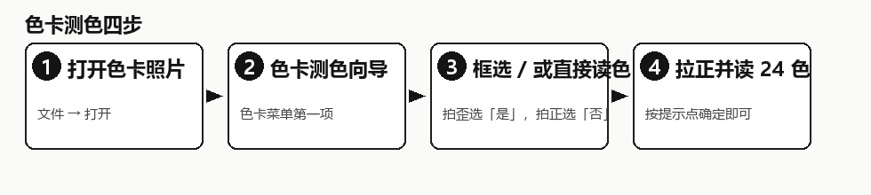
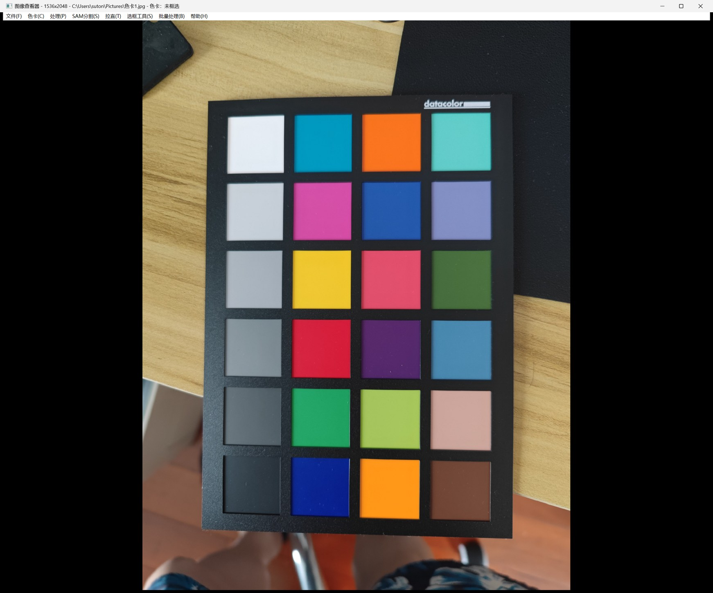
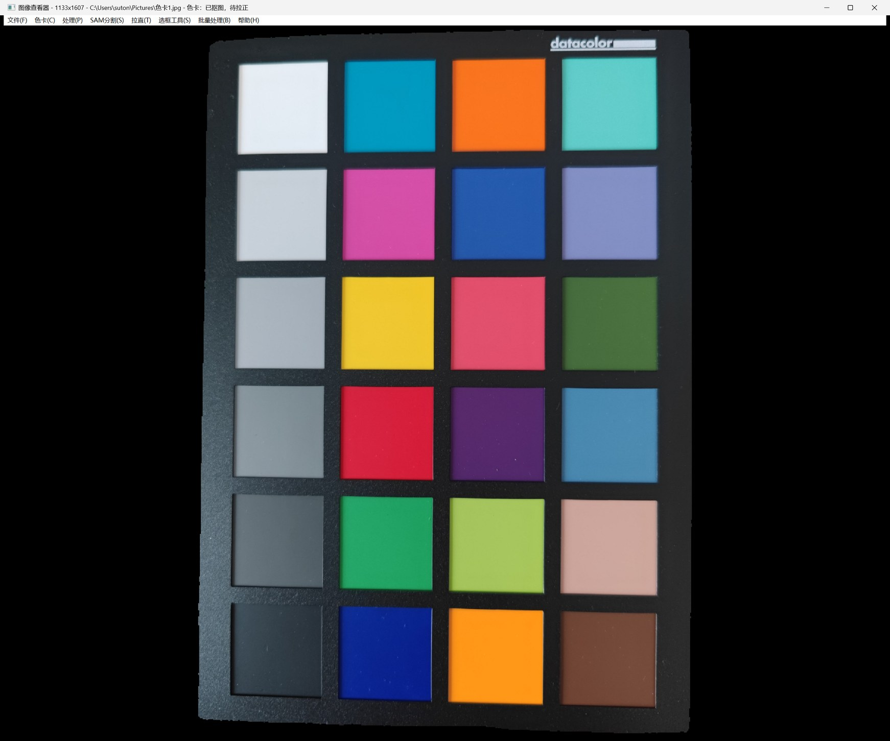
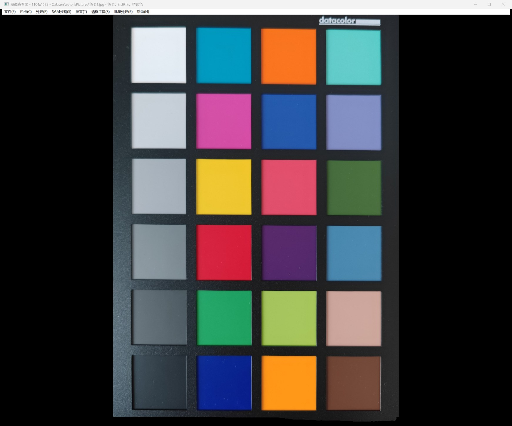
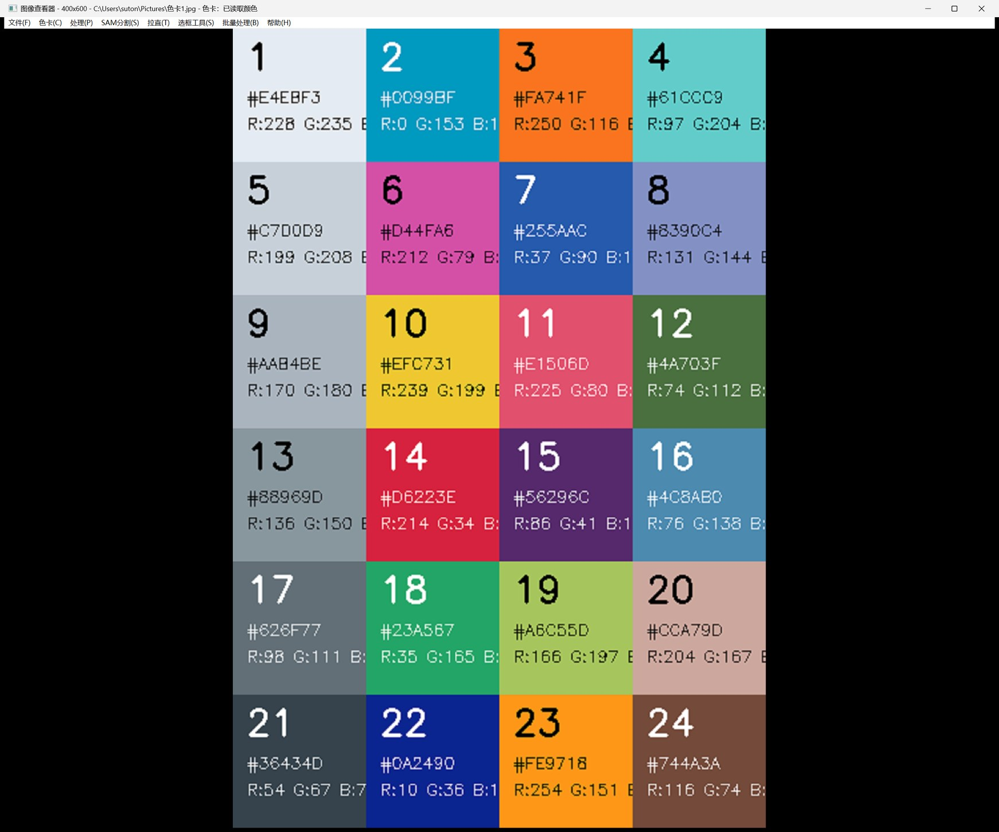

这是什么程序
Windows 上的图像查看 / 处理工具。打开照片后可以缩放、平移、旋转。核心用途是把拍歪的色卡拉正，并读出 24 个色块的 RGB。
下面整套截图都用同一张例图实地跑完：.\help\images\photo-color-card.jpg（桌上的 Datacolor 24 色卡，带透视）。窗口大小按约 1742×1451 截取。

用「色卡1.jpg」完整做一遍
第 1 步：打开照片
「文件 → 打开文件」，选上面的路径；或把文件拖进窗口。标题栏会显示图像尺寸和文件路径。

第 2 步：框选出整张色卡
点 透视矫正 → 色卡测色向导。对这张周围还有桌子和腿的照片，问「这是拍歪的色卡照片吗？」时选 是。
等 SAM 模型加载完成（第一次可能要几秒）。然后按住左键拖一个绿框，包住黑色色卡外框整张（含右上角 datacolor 字样），松开。不要只框几个色块。
松开后标题可能显示「正在分割」。成功后背景变黑，只留下色卡，标题变成 色卡：已抠图，待拉正。

向导会问要不要自动拉正，选「确定」。也可以自己点菜单 2. 拉正色卡 (自动透视)。
第 3 步：拉成正视图
自动透视会找色卡四个角，把画面拉正。成功后标题变成 色卡：已拉正，待读色。四个边应接近矩形，色块成整齐的 4 列 × 6 行。

第 4 步：读取 24 色
向导问是否读取色块时选「确定」，或点 3. 读取色块颜色。先出现带编号的网格，再确定后出现色卡参考图：编号、十六进制、RGB。标题变成 色卡：已读取颜色。

debug_out\。本例实测读数：
| # | HEX | RGB | # | HEX | RGB |
|---|---|---|---|---|---|
| 1 | #E4EBF3 | 228,235,243 | 2 | #0099BF | 0,153,191 |
| 3 | #FA741F | 250,116,31 | 4 | #61CCC9 | 97,204,201 |
| 5 | #C7D0D9 | 199,208,217 | 6 | #D44FA6 | 212,79,166 |
| 7 | #255AAC | 37,90,172 | 8 | #8390C4 | 131,144,196 |
| 9 | #AAB4BE | 170,180,190 | 10 | #EFC731 | 239,199,49 |
| 11 | #E1506D | 225,80,109 | 12 | #4A703F | 74,112,63 |
| 13 | #88969D | 136,150,157 | 14 | #D6223E | 214,34,62 |
| 15 | #56296C | 86,41,108 | 16 | #4C8AB0 | 76,138,176 |
| 17 | #626F77 | 98,111,119 | 18 | #23A567 | 35,165,103 |
| 19 | #A6C55D | 166,197,93 | 20 | #CCA79D | 204,167,157 |
| 21 | #36434D | 54,67,77 | 22 | #0A2490 | 10,36,144 |
| 23 | #FE9718 | 254,151,24 | 24 | #744A3A | 116,74,58 |
「透视矫正」菜单
| 菜单项 | 什么时候用 |
|---|---|
| 色卡测色向导 | 最常用。按当前进度弹对话框。 |
| 1. 框出色卡 (SAM抠图) | 照片里色卡周围还有桌子、背景时先抠。 |
| 2. 拉正色卡 (自动透视) | 抠完之后。没抠过是灰色。 |
| 手动四点拉正色卡 | 自动找不到四个角时用。 |
| 3. 读取色块颜色 | 已经拉正之后。未拉正是灰色。 |
| 恢复到打开时的原图 | 做错了，回到刚打开的那张。 |
标题栏进度：未框选 → 已抠图，待拉正 → 已拉正，待读色 → 已读取颜色。
熟手可以不走向导，按 1、2、3 自己点。没做上一步时后面的项是灰的，这是故意的。
已经拍正，或只用手动四点
展平画作、扫描件等平面时，选「透视矫正 → 手动四点矫正」，依次点击物体的左上、右上、右下、左下。第四点完成后直接显示正视图。
图已经是铺满窗口的 4×6 正视色卡：向导里选「否」，直接读 24 色，跳过抠图和透视。
不想用 SAM：打开照片 →「透视矫正 → 手动四点拉正色卡」→ 依次点色卡四个角（左上、右上、右下、左下）。点错按 Esc。点完第四点会自动拉正，并询问是否读色。
其它常用操作
| 操作 | 怎么做 |
|---|---|
| 打开 / 关闭 | 使用文件菜单，也可以拖入图片打开。 |
| 保存 | 用当前处理结果覆盖正在编辑的文件。 |
| 另存为 | 在可缩放的文件对话框里选位置和格式。保存成功后，后续「保存」写入新文件。 |
| 上一张 / 下一张 | 鼠标移到窗口左右边缘，点箭头 |
| 缩放 | 滚轮，以鼠标位置为中心 |
| 平移 | 在图上按住左键拖（不要处在框选/拉直/四点模式） |
| 灰度、Canny、阈值、旋转、EXIF | 「处理」菜单。测色不必先做这些 |
| 画线水平校正 | 「拉直」：先画直线，再水平校正 |
| 裁剪 / 涂抹 | 「选框工具」 |
| 批量缩图 | 「批量处理」 |
| 使用说明 | 「帮助 → 使用说明」（本页） |
要抠人、抠物体而不是走色卡流程，用顶栏「SAM分割」：交互分割抠像 → 拖框 → 再点「抠图并显示」。灰度图会禁用 SAM。模型文件 vit_t_encoder.onnx、vit_t_decoder.onnx 放在 exe 旁边。
命令行 / 截图
没有 MCP。脚本和 AI 用 --cli。查看器会在本机 127.0.0.1:17332 听命令（不出网），这是给 CLI 用的，不是网站。
本页四张步骤图就是用 CLI 实地跑完后截的。截图一次存两张：客户区画面，以及整个活动窗口（含标题栏和菜单）。
.\target\debug\img_view_cv.exe --cli status
.\target\debug\img_view_cv.exe --cli open .\help\images\photo-color-card.jpg
.\target\debug\img_view_cv.exe --cli screenshot
.\target\debug\img_view_cv.exe --cli screenshot .
更完整的备忘：docs/色卡向导与CLI.md。
常见问题
| 现象 | 原因与处理 |
|---|---|
| 「2. 拉正」是灰色 | 还没抠出色卡。先做第 1 步，或向导里对已经拍正的图选「否」。 |
| 「3. 读取色块」是灰色 | 还没拉正。先自动透视或手动四点。 |
| 拖完框没反应 | 绿框要够大，松开后等「正在分割」。框太小会提示重画。 |
| 自动透视失败 | 矩形不够完整。改用手动四点，点色卡黑框四角。 |
| 读色结果花了、格子对不齐 | 当前图还不是正视色卡。先抠再拉正。 |
| 中文文件名打不开 / 透视报空图 | 已按字节解码。仍失败就先抠图，对当前图继续，不必再读原路径。 |
| SAM 找不到模型 | 把两个 vit_t_*.onnx 放到 exe 同一目录。 |